INTR250P PRESENTS · ONE NIGHT ONLY
Dylan vs. Mateo.
Four minutes.
One winner. Maybe.
FEATURING Mateo Herrera & Dylan Young
Watch the debate
From the slides
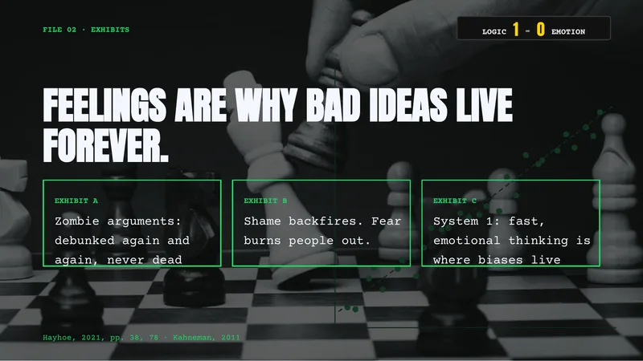
“Zombie arguments work because they’re short, catchy gotchas, and they keep circulating among the people who already want to hear them.”
Mateo – Saving Us, ch. 4
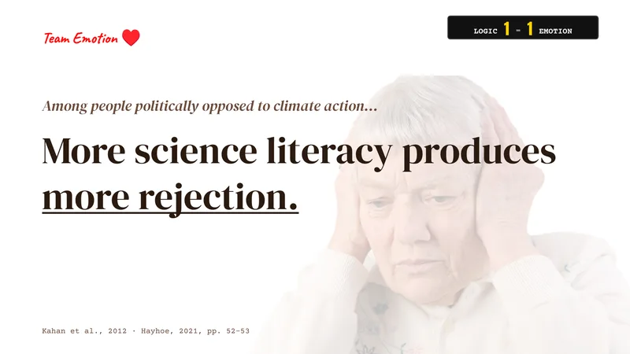
“The smarter people are, the better they are at defending their view, and the more they resist changing it.”
Mateo – Saving Us, ch. 5
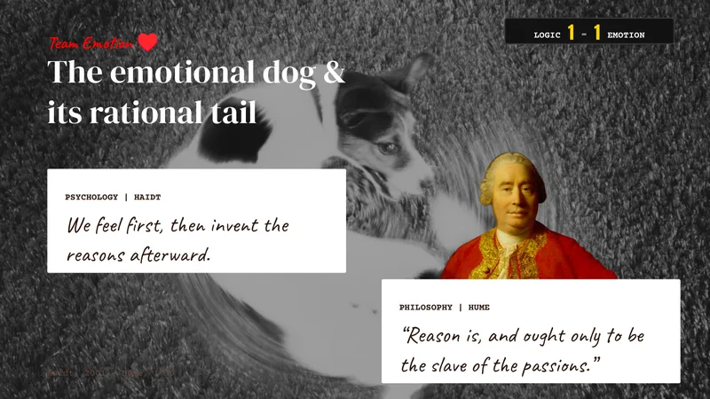
“Facts describe; they don’t prescribe. They give us context, but they don’t give us an ought.”
Mateo – Saving Us, ch. 5
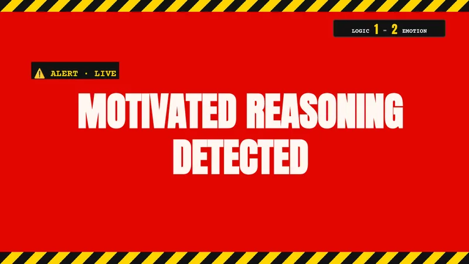
“Motivated reasoning is our emotional habit of rationalizing our biases so we can prove we’re right.”
Mateo – Saving Us, ch. 5
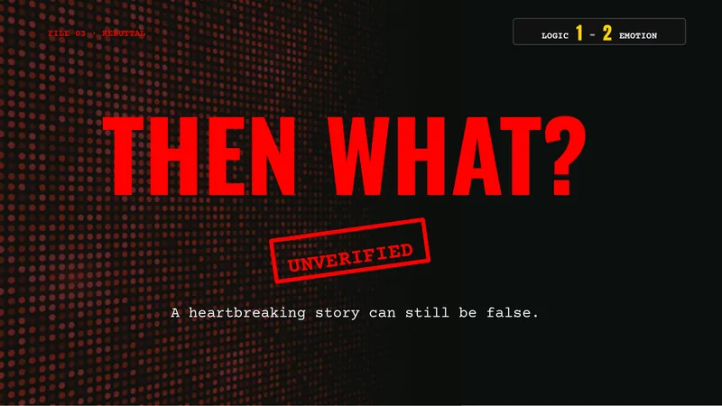
“Curiosity won’t get you very far if you can’t properly evaluate what it uncovers.”
Mateo – I Never Thought of It That Way, epilogue
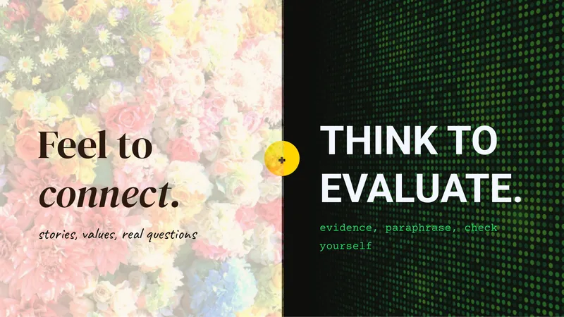
“Tying a hazy threat to people’s own values and concerns is surprisingly effective.”
Mateo – Saving Us, ch. 3
Our challenge to you
Mónica Guzmán closes I Never Thought of It That Way with a habit anyone can practice, whether they lean toward logic or emotion.
It doesn’t ask you to change your mind, just to reach across long enough to see what the other person sees.
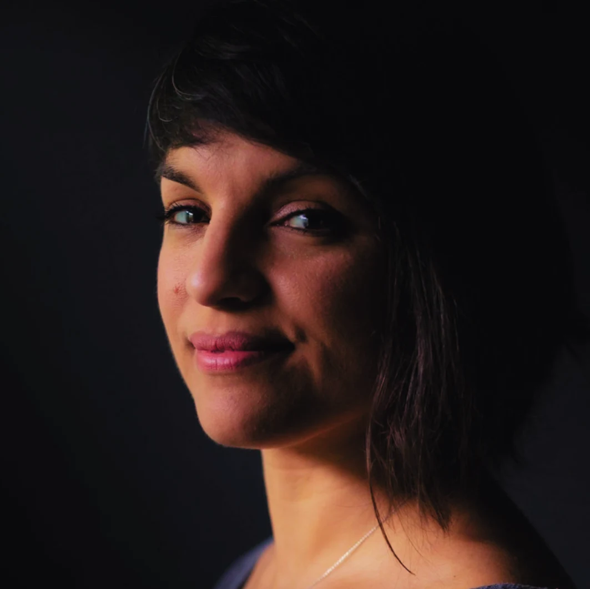
GUZMÁN’S CHALLENGE
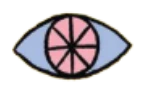
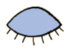
“I never thought of it that way.”
Try saying it once a day when someone shows you a perspective you hadn’t considered.
Guzmán, 2022, p. 236
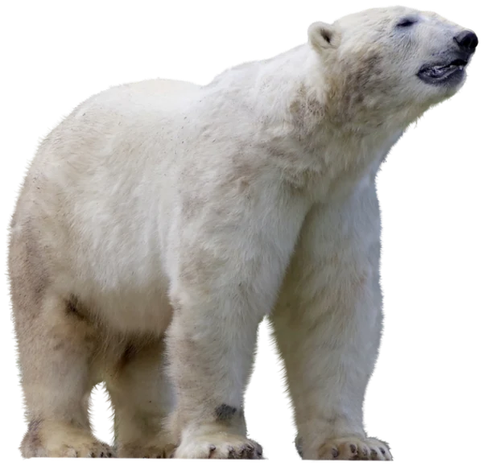
Cast your vote
WHO WON?
☐ Dylan
☐ Mateo
HOW DID YOU DECIDE?
☐ Head
☐ Gut
Scan the code or open the link to vote. It only takes a few seconds.
Dylan, send me an epic picture of yourself so I can put you in here too!
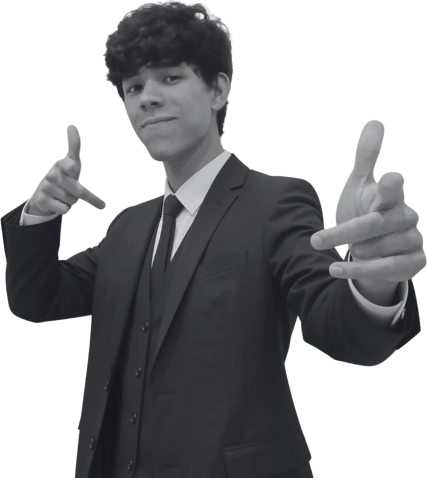
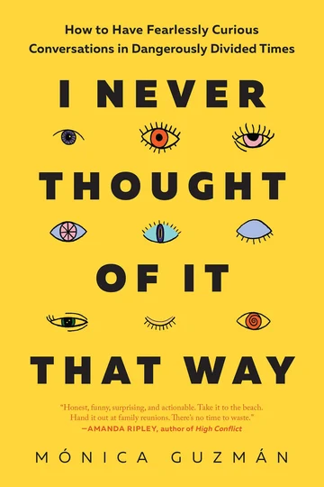
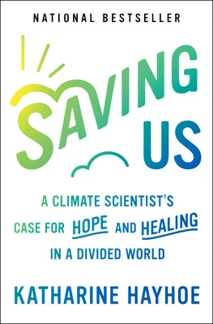
WORKS CITED
- Guzmán, M. (2022). I never thought of it that way: How to have fearlessly curious conversations in dangerously divided times. BenBella Books.
- Haidt, J. (2001). The emotional dog and its rational tail: A social intuitionist approach to moral judgment. Psychological Review, 108(4), 814–834. https://doi.org/10.1037/0033-295X.108.4.814
- Hayhoe, K. (2021). Saving us: A climate scientist’s case for hope and healing in a divided world. One Signal Publishers/Atria.
- Hume, D. (2000). A treatise of human nature (D. F. Norton & M. J. Norton, Eds.). Oxford University Press. (Original work published 1739)
- Kahan, D. M., Peters, E., Wittlin, M., Slovic, P., Ouellette, L. L., Braman, D., & Mandel, G. (2012). The polarizing impact of science literacy and numeracy on perceived climate change risks. Nature Climate Change, 2(10), 732–735. https://doi.org/10.1038/nclimate1547
- Kahneman, D. (2011). Thinking, fast and slow. Farrar, Straus and Giroux.
We made this for our INTR250P final project.